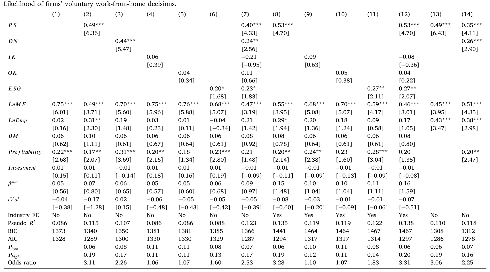
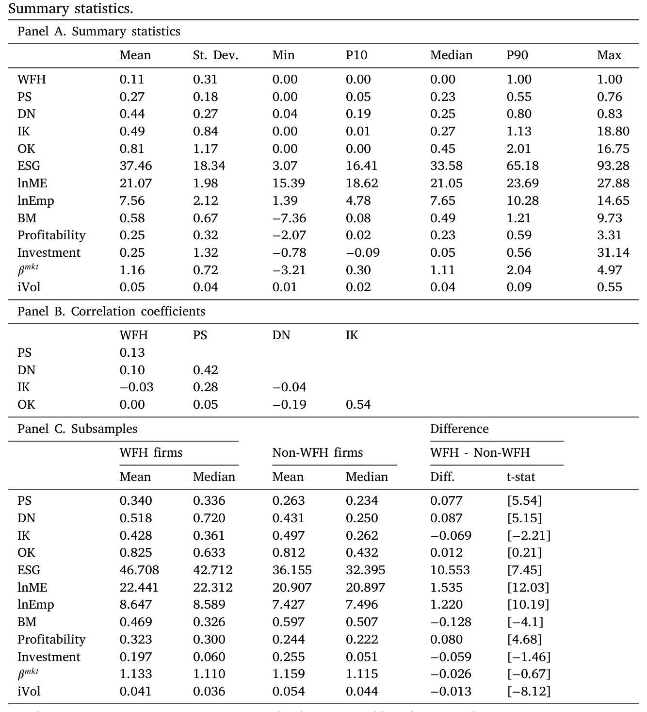
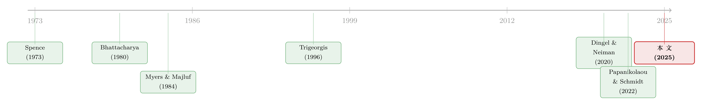

先举手的人：危机里，「主动适应」到底值多少钱？
本文读的是 Fisher, Knesl & Lee (2025, Journal of Financial Economics)：作者从 2020 年初的公司官网里，手工「爬」出了一批在强制封锁之前就【自愿】宣布转向居家办公的公司，用事件研究发现——这些「先举手」的公司，公告后五天的累计超额收益达到公司市值的 3%–5%，同时市场 beta、劳动不灵活性风险、违约概率全线下降。一句话：在危机里，能不能、敢不敢、快不快地「主动适应」，是一笔市场愿意当场重新定价的、看不见的资产。
1 引言：一个我们一直不会量的东西
公司金融里有一个我们都「知道」、却几乎从来没有好好量过的东西，叫做适应能力（adaptability / flexibility / resilience）。
教科书会告诉你，一家公司值多少钱，取决于它的资产、它的现金流、它的杠杆。但凡是经历过真实经营的人都明白，还有一样东西同样要命：当世界突然变了样，这家公司能不能掉头？这件事的价值，早在 Stigler（1939）、Pindyck（1982）、Trigeorgis（1996）那里就被反复讨论过，实物期权（real options）理论的整套语言就是为它准备的。Graham and Harvey（2001）做企业 CFO 调查时也发现，「保持财务灵活性」是经理人念兹在兹的头号目标。
可问题在于——适应能力是看不见的。它不像负债那样写在资产负债表上，也不像 beta 那样能从历史收益率里跑出来。在风平浪静的年份，你根本无从知道哪家公司「能适应」、哪家公司只是「看起来能适应」。于是这件最重要的事，恰恰是最难量的事。
直到 2020 年初。
一场全球性灾难，像一台巨大的压力测试机，在几周之内把所有公司推到了同一道关口前：要不要、要多快地把员工送回家办公？这是一个真实的、需要当场做出的决策，而且——这是本文最聪明的地方——在强制封锁到来【之前】，它还是一个自愿的决策。有人冲在前面，有人按兵不动。先举手的那批人，等于在所有人面前，把自己「能适应」这件看不见的事，亲手演了出来。
本文要回答的，就是这样一个问题：当一家公司在危机中主动、公开地展示自己的适应力时，市场会给它定多少钱？
2 一个关键区分：是「能力」，还是「行动」？
要理解这篇文章的贡献，得先看清它和过去文献的一条分水岭。
过去研究「企业灵活性」的做法，几乎都是横截面比较：拿经营杠杆高的公司比经营杠杆低的（Novy-Marx, 2011）、拿劳动杠杆高的比低的（Chen et al., 2011）、拿受融资约束的比不受约束的（Campello et al., 2010）。也就是说，它们比较的是公司的特征（characteristic）——一种「适应能力（adaptability）」。
本文的切口完全不同。作者反复强调一个区分：适应能力（adaptability）是一种特征，适应行动（adaptation）是一个动作。 前者是「你能不能」，后者是「你做没做、做得快不快」。
这个区分为什么重要？因为很多衡量「灵活性」的代理变量，是定义在行业或部门层面的——它根本不在某一个具体经理人的选择集里。你没法建议一位 CEO「把你公司变成一个更适合远程办公的行业」。但你可以观察：在同一个行业、同样看起来「能适应」的两家公司里，到底是哪一家真的动了、动得更早。本文比较的，正是外表相似、但行动不同的公司。
于是作者做了一件笨功夫但极有价值的事：在 2020 年 6 月初，用一套词袋（bag-of-words, 参考 Loughran and McDonald, 2011）方法——搜索 "work from home"、"wfh"、"remote work"、"work remotely" 等十来个关键词——去爬取公司官网，再用人工逐一核验日期戳和内容真伪，最终从 2549 家 CRSP 样本公司里，识别出 273 家在 2020 年 3 月 19 日（加州宣布全美第一个州级封锁）之前，就【自愿】公告转向居家办公的公司。
这 273 家公司，就是本文的主角。
3 识别策略：用「相似对照」逼出适应的净效应
有了「行动者（announcers）」，接下来一个自然的问题是：怎么知道公告后的股价反应，是冲着「适应」来的，而不是别的什么？
作者的识别逻辑，可以拆成三步。
第一步，先把「能力」控制住。 作者并不是简单地比较行动者和全市场。他们先用一组事前可观测特征，给每家行动者匹配一批特征相似、但没有公告的非行动者，构造对照组（matched sample）。这些特征包括：
- 劳动可远程化程度：
DN（Dingel and Neiman, 2020，按 2 位 NAICS、用 O*NET 算）与PS（Papanikolaou and Schmidt, 2022，按 4 位 NAICS、用 ATUS 算）； - 无形资本
IK（Peters and Taylor, 2017）、组织资本OK（Eisfeldt and Papanikolaou, 2013）； - ESG 评分、市值、雇员数、beta、账面市值比、盈利能力、投资、特质波动率等。
这一步的意思是：我先用看得见的特征解释掉一部分，剩下的，才是「行动」本身带来的东西。 这正好对应实物期权模型给经验工作的提示——应当控制事前可观测特征（MacKinlay, 1997）。
第二步，看哪些特征真正预测了「行动」。 作者跑了 logit 回归来预测公告：
结果（如表 2 所示）很干脆：在控制其他变量后，PS（劳动可远程化）是【最稳健】的预测变量。把 PS 从 10 分位提到 90 分位，公告概率从大约 6% 升到约 19%，几率比（odds ratio）超过 3。作者更进一步，把 12 个解释变量的 6142 种组合全跑了一遍，用 BIC、AIC 做模型选择——按标准准则选出的最优模型【总是包含 PS】；其中 BIC 选出的模型只留下三个变量：PS、公司规模、雇员数，全部高度显著。

Table 2
这一步既是识别的基石，也是一个漂亮的副产品：它反过来验证了 PS 这把尺子本身的有效性——一个事前的「灵活性特征」，确实强烈预测了事中的「适应行动」。
第三步，才是真正关键的一步：估值与风险的事件研究。 把「能力」剥离之后，作者用事件研究（event study）去量「行动」的净效应——既看收益（价值），也看风险。
4 主要结果：3%–5% 的价值，和一场风险的退潮
先看价值。
作者用了好几套互不相同的方法来稳健估计：带事件窗口虚拟变量的面板回归、相对基准的收益差面板回归、以及标准化的异常收益（Patell, 1976; Kolari and Pynnönen, 2010）。所有方法都指向同一个结论：行动者在公告后的几天里，出现了统计显著的异常收益，而在公告【之前】和【之后】的窗口里都没有。经济量级上，公告后五日的累计超额收益，相当于公司市值的 3%–5%。
注意「公告前后窗口都没有」这件事的分量。如果异常收益在公告前就出现，那更像是「这些公司本来就在涨」；如果在公告后很久才慢慢冒出来，那像是别的因素。唯独收益恰好集中在公告后的窗口，才支持「是这条公告本身，把一个新信息打进了价格」。
再看风险——这才是本文比一般「公告效应」研究更进一步的地方。
作者比较了行动者、对照组、其他公司三个组合，发现在事件窗口里，行动者的风险下降得最厉害：市场 beta 下降、对 PS 因子（劳动不灵活性风险，Papanikolaou and Schmidt, 2022）的暴露下降，连违约概率（用 Duan et al., 2012 的方法度量）也同步下滑。换句话说，市场看到这条公告后，不只是「往上调了估值」，而是同时「往下调了风险」。
价值升、风险降——这两件事同时发生，恰恰是实物期权理论在非对称信息下的标准预言：一个能适应的公司，等于手里握着一份「在坏状态下掉头」的期权；当它把这份期权公之于众，市场既会调高它的价值，也会调低它对那个「尚未揭晓的系统性冲击」的暴露。
为了把这些公司到底「长什么样」摆清楚，表 1 给出了描述性统计：样本里约 11% 的公司在窗口期发出了公告；PS（适合远程办公的劳动占比）均值 27%，从 10 分位的 5% 一路到 90 分位的 55%，横截面差异巨大；行动者相比非行动者，PS 与 DN 都显著更高，市值更大、更赚钱、账面市值比与特质波动率更低。

Table 1
5 模型：为什么「先举手」会值钱？
到这里，一个怀疑论者会问：股价涨，会不会只是因为这些公司碰巧是「好公司」？ 这正是本文理论部分要回答的。
作者在附录 A 里搭了一个简洁的实物期权 + 非对称信息模型。它的核心设定是：公司有一种潜在属性（latent attribute）——是否善于适应——这件事经理人知道，但市场事前难以辨认。当灾难降临，善于适应的经理人会选择采取适应行动，而这个决策对市场而言是「不完全可预测的」。于是，一旦公司公告适应，市场就会据此更新对这家公司潜在类型的判断，产生两个可证伪的经验含义：
$$ (1)\quad \text{公告效应为正};\qquad (2)\quad \text{适应行动降低了股票对灾难系统性现金流冲击的暴露}. $$
这两条，正好就是第 4 节里看到的「价值升、风险降」。
但这里有一个更深的、也更有意思的机制类比。作者指出，这和 Bhattacharya（1980）的股利信号理论异曲同工：公开信号最根本的作用，不是创造价值，而是把价值从内部人「提前」传递给市场。如果一家公司其实悄悄完成了最优适应、却不公告，那么它的长期价值和经营业绩会一模一样，唯一的区别是——市场没有一条公告去「触发」价格的即时调整。
这个推论本文还真的去验证了：在公告的公司里，那些登上了 Bloomberg 的公司，异常收益实现得更快（参考 Fedyk, 2024 关于新闻位置影响市场的发现）。信号的价值，藏在「信息传递的时点」里。
那「光说不做」呢？万一有公司只是嘴上喊喊、模仿真正的适应者来骗市场反应？作者用了两层回应。其一，理论上：这是一个经典的信号分离问题（Spence, 1973）——如果市场无法区分类型、陷入混同均衡（pooling equilibrium），公告就不该有反应；而本文观测到了显著的公告效应，恰恰【拒绝】了混同均衡的核心预言。其二，现实上：居家办公政策不是「廉价磋商（cheap talk）」（Crawford and Sobel, 1982），它牵涉成百上千名员工的真实安排，说错了、做不到，都要在经营、客户预期和经理人声誉上付出代价。作者还给了一个允许「少量模仿」的扩展（部分揭示均衡，沿用 Fisher and Heinkel, 2008），结论是：模仿至多会削弱公告效应，但不会从根本上改变预测。
6 机制验证：信息原本就藏在十年前的 10-K 里
理论说，行动者拥有一种「市场事前难以察觉」的潜在属性。但「难以察觉」不等于「不存在」。于是作者做了一件很「侦探」的事：回到这些公司疫情前的 10-K 年报里，去找这种属性的蛛丝马迹。
方法上，他们先从远程办公、韧性、数字化转型、适应性相关的文本里构造一个训练语料库，再用潜在语义分析（latent semantic analysis, LSA; Deerwester et al., 1990）提炼出若干文本主题，最终落到四个 LSA 主题上。结果发现：行动者在疫情前，就已经在「对远程办公及其他组织无形资本的关注」上占有优势，并且在疫情后把这种优势进一步拉大了。
这一步的意义在于：它把「市场反应」从「运气」里摘了出来。公告后涨的那 3%–5%，并不是凭空对一个随机事件的反应，而是市场在为一种早已埋藏在公司文本基因里、却长期被低估的组织无形资本（参考 Cohen et al., 2020; Hassan et al., 2019 关于公司沟通中「未被充分利用的细微信息」的发现）当场补价。
最后，作者还查了经营业绩这块「硬证据」：相对对照组，行动者在疫情期间到长期（至 2023 财年）的异常经营业绩为中性偏正，其中疫情期间的 R&D 与雇员增长显著为正。看不见的适应力，确实兑现成了看得见的经营优势。
7 文献脉络
把这篇文章放进文献的长河里，它站在两条河流的交汇处。
一条河，是实物期权与公司灵活性：从 Stigler（1939）、Pindyck（1982）到 Trigeorgis（1996）奠定了「灵活性即价值」的语言，再到 Novy-Marx（2011）、Chen et al.（2011）等用经营/劳动杠杆做的横截面比较。另一条河，是非对称信息下的公司行动信号：Spence（1973）的信号分离、Bhattacharya（1980）的股利信号、Myers and Majluf（1984）的融资顺序，构成了「公告为何能传递信息」的整套逻辑。

而疫情，给了这两条河一个共同的实验场。Dingel and Neiman（2020）和 Papanikolaou and Schmidt（2022）造出了「劳动可远程化」的度量，Barry et al.（2022）、Pagano et al.（2023）研究了危机中的公司灵活性。本文的位置在于：它不再停留在「用事前特征比较公司」，而是抓住一个自愿、可观测、有真实代价的适应行动，把「适应」从一种特征变成一个可定价的事件，给整条文献补上了「行动」这一维。
（关于事件研究本身在横截面推断上的陷阱——一根 t 值何时还不等于因果——可参见《事件研究里的「假阳性」》。）
8 评论与延伸（Q&A + 研究方向）
(a) 几个可能的疑问
Q：3%–5% 的超额收益，会不会只是「优质公司在疫情里本来就抗跌」，被错记成了适应的功劳？
这正是匹配设计要堵的口子。作者先用
PS、DN、规模、ESG、无形/组织资本等一整套事前特征构造相似对照组，再在组内比较；而且收益只集中在公告后的窗口，公告前后都没有。这让「本来就抗跌」的解释很难独立成立——抗跌应当是持续的，而不是恰好卡在公告那几天。
Q：自愿公告的公司是不是高度自选择（self-selected）？这算因果吗？
严格说，这不是随机实验，自选择确实存在——但作者的模型恰恰把自选择当作【信号】来用，而非当作噪声来消除。理论预言的就是「善于适应者更可能公告」，所以选择本身是信息的一部分。要警惕的是另一类自选择：公告与否可能还和某个未被匹配上的维度相关（比如管理层风格），这部分残余偏误，匹配未必能完全吸收。
Q：「光说不做」的模仿者会不会污染结果？
作者的两道防线：理论上，若市场无法分离类型（混同均衡），公告就不该有反应，而显著的公告效应直接拒绝了这一点；现实上，居家办公牵涉大量员工，不是零成本的「廉价磋商」，谎报有经营和声誉代价。扩展模型还表明，少量模仿只会衰减而非颠覆公告效应。
Q：为什么说这篇文章比一般的「公告效应」研究更进一步？
因为它同时量了风险。传统事件研究多半只看价值（CAR）。本文把 beta、PS 因子暴露、违约概率一起纳入，发现价值升的同时风险降——这正是实物期权框架的独特预言，也是普通信号故事给不出来的。
Q：登上 Bloomberg 就涨得更快，这难道不是「新闻驱动」而非「适应驱动」？
两者并不矛盾。本文的解读是：适应是【价值的来源】，而媒体曝光决定了这份价值【被定价的速度】。Bloomberg 不创造价值，它只是把内部人早已知道的信息更快地推送给市场——这恰好印证了 Bhattacharya 式「信号的作用在于提前信息传递时点」的机制。
Q：结论能外推到别的危机吗，还是只是 Covid 的一次性故事？
这是最该谨慎的地方。疫情的特殊性在于「居家办公」恰好是一个可观测、可言说、可核验的适应动作；换一场危机（比如供应链断裂、能源冲击），适应行动未必有这么干净的公开信号。本文证明的是「当适应可被观测时，它确实被定价」，而非「所有适应都能被市场及时看见」。
(b) 几个可能的研究问题与提案
1. 适应行动在信用市场上的定价。 【经济故事】本文发现公告同时压低了股权 beta 与违约概率——那债券持有人有没有「收到」这个信号？危机中的适应力降低了下行风险，理论上应当压缩信用利差。 【可行性】高。用 TRACE 的公司债成交价构造公告窗口的利差变化，与本文的股票事件研究并行，识别策略可直接复用其匹配框架。数据现成，难点只在于这 273 家公司里有公开债券的子样本可能偏小。
2. 外资持有人对「适应信号」的反应是否不同？ 【经济故事】外国机构投资者对本地公司的「软信息」（如官网公告、10-K 文本主题）获取更慢、解读更弱。若如此，他们对适应公告的反应应当更迟缓，且更依赖 Bloomberg 这类全球性媒体的转载。 【可行性】中。需要 FactSet/13F 拆出外资持股，结合本文的 Bloomberg 覆盖变量做交互。识别上可比较「上没上 Bloomberg」对内外资反应时点差异的调节作用，doable，但持股频率（季度）与事件窗口（日度）的错配需要处理。
3. 适应公告对二级市场流动性的冲击。 【经济故事】非对称信息下降，按理应当收窄买卖价差、提升深度——公告本身可能是一次流动性改善事件。但反过来，若公告引来大量知情交易者，短期内也可能加剧逆向选择。两种力量孰强孰弱是实证问题。 【可行性】高。用 TAQ 算公告窗口前后的有效价差与 Amihud 非流动性指标，事件研究即可。与本文的风险下降结论形成互补。
4. 把「文本基因」做成事前可交易的信号。 【经济故事】本文表明，疫情前 10-K 里对远程办公/组织无形资本的关注度，预测了后来的适应与超额收益。那么这种「文本主题暴露」能否在【危机来临前】就构造成一个组合，捕捉危机中的韧性溢价？ 【可行性】中。LSA 主题打分可复制，但「危机前」的择时本质上要求样本外、跨多次危机验证，单靠 Covid 一次事件不足以证明可交易性，需要把方法推广到更多历史冲击上。
我的判断
这篇文章最漂亮的地方，是它把一个长期「只可意会」的概念——危机适应力——变成了一个可观测、可定价、可证伪的对象。手工爬取官网公告这种笨功夫，造出了一个别人没有的样本；而「行动 vs 能力」「价值 + 风险」「公告 + 文本机制」三层证据彼此咬合，论证链条相当完整。3%–5% 的量级既可信又有经济意义。
对识别，我最大的保留仍在自选择的残余维度：匹配控制住了 PS、DN、规模等可观测项，但「敢不敢、快不快地公告」很可能还系于管理层的某种难以观测的特质（风险偏好、对资本市场的敏感度），而这恰恰也可能独立地影响估值。本文用模型把自选择诠释为信号，逻辑自洽，但经验上仍难完全排除「公告倾向」与「公司质量」之间未被吸收的相关性。其次，结论的外部效度受限于 Covid——居家办公是一个罕见地「干净」的公开适应信号，换一场危机未必有。
后续我最想看到的，是把这套框架搬到信用市场和外资持有人上：如果债券利差、外资反应也呈现同样的「适应折价」结构，那么「适应被定价」就不再是一个股票市场的局部现象，而是一条更普适的资产定价规律。
参考文献
- Bhattacharya, S. (1980). Nondissipative signaling structures and dividend policy. Quarterly Journal of Economics 95, 1–24.
- Chen, H., Kacperczyk, M., Ortiz-Molina, H. (2011). Labor unions, operating flexibility, and the cost of equity. (as cited for labor leverage and flexibility.)
- Crawford, V., Sobel, J. (1982). Strategic information transmission. Econometrica.
- Deerwester, S., et al. (1990). Indexing by latent semantic analysis. Journal of the American Society for Information Science.
- Dingel, J.I., Neiman, B. (2020). How many jobs can be done at home? Journal of Public Economics.
- Duan, J.-C., Sun, J., Wang, T. (2012). Multiperiod corporate default prediction—A forward intensity approach. Journal of Econometrics.
- Eisfeldt, A.L., Papanikolaou, D. (2013). Organization capital and the cross-section of expected returns. Journal of Finance.
- Fedyk, A. (2024). Front-page news: The effect of news positioning on financial markets. Journal of Finance 79(1), 5–33.
- Fisher, A., Heinkel, R. (2008). Reputation and managerial truth-telling as self-insurance. Journal of Economics & Management Strategy 17, 489–540.
- Graham, J.R., Harvey, C.R. (2001). The theory and practice of corporate finance: Evidence from the field. Journal of Financial Economics 60(2–3), 187–243.
- Kolari, J.W., Pynnönen, S. (2010). Event study testing with cross-sectional correlation of abnormal returns. Review of Financial Studies.
- Loughran, T., McDonald, B. (2011). When is a liability not a liability? Textual analysis, dictionaries, and 10-Ks. Journal of Finance.
- MacKinlay, A.C. (1997). Event studies in economics and finance. Journal of Economic Literature.
- Myers, S.C., Majluf, N.S. (1984). Corporate financing and investment decisions when firms have information that investors do not have. Journal of Financial Economics.
- Papanikolaou, D., Schmidt, L.D.W. (2022). Working remotely and the supply-side impact of Covid-19. (labor-inflexibility risk.)
- Patell, J.M. (1976). Corporate forecasts of earnings per share and stock price behavior: Empirical tests. Journal of Accounting Research.
- Peters, R.H., Taylor, L.A. (2017). Intangible capital and the investment-q relation. Journal of Financial Economics.
- Spence, M. (1973). Job market signaling. Quarterly Journal of Economics.